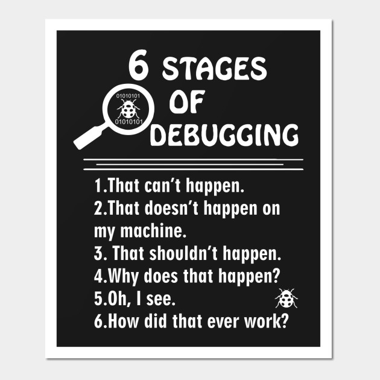

00. Link - What’s New in ES2018
01. Link - Vue Native is a framework to build cross platform native mobile apps using JavaScript
02. Link - Office 365 Is Being Rewritten in JavaScript
03. Link - Migrating Medium to React.js and GraphQL
04. Link - Concurrent marking in V8
05. Link - From Node.js to Go: There, and back again
06. Link - JavaScript engine fundamentals: Shapes and Inline Caches
07. Link - Staying up-to-date as a software developer with a daily learning routine
08. Link - Vim after 15 years
09. Link - Learning operating system development using Linux kernel and Raspberry Pi
10. Link - How to program a quantum computer
